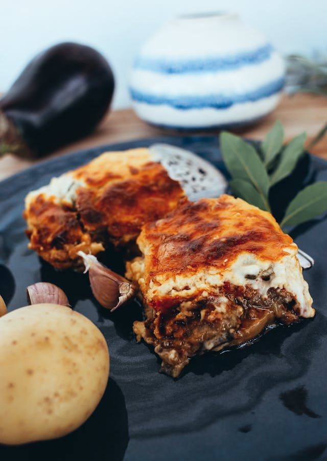

Lasagna

A photo by Rachel Claire on pexels.com
Description
Une recette de lasagnes pour se reconforter quand il fait froid.
Ingrédients
- 500g de viande de boeuf
- 3 oignons
- 300g de tomates en conserves
- Pâtes à lasagne
Etapes
- Couper les oignons
- Faire cuire la viande
- Ajouter les oignons et les tomates
- Faire des couches avec la sauce et les pâtes
- Faire cuire au four 50 minutes
Home